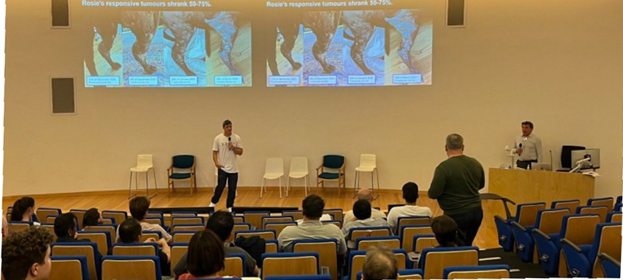
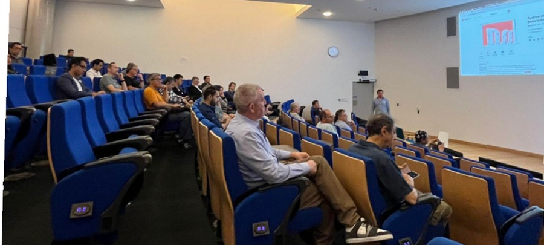

Event organiser · Sydney AI + Data
I organise meetups for the 7,000+ members of Sydney AI + Data (formerly Data Science Sydney).


I organise meetups for the 7,000+ members of Sydney AI + Data (formerly Data Science Sydney).


I’ve taught AI and data analytics to classes of over 100, led Python tutorials and supervised capstone projects (student evaluations above 4.9/5).
University of New South Wales · INFS3822
Co-designed and taught the AI and machine learning components of the course.
University of Technology Sydney · 41180
Led coding tutorials on data analytics and machine learning for cybersecurity.
University of Technology Sydney · 42172
Taught AI algorithms and their implementation in Python.
University of Sydney · QBUS6600
Supervised postgraduate capstone projects in data analytics and applied machine learning over two terms.
Chongqing College of Finance and Economics
Led the design of teaching materials and the final hands-on project for undergraduate courses in Python, data analysis and machine learning.